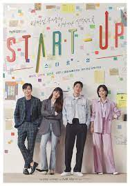
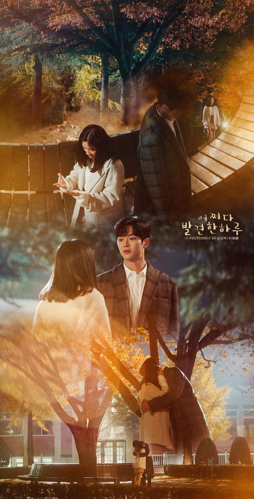
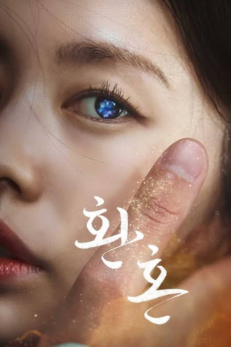

TOP 5 KDRAMAS TO WATCH
DR. ROMANTIC TEACHER KIM
.jpg "dr. romantic")
Country:Korea
Released:2016
Genre: Medical, Melodrama, Romance
SYNOPSIS:
It is a story about people who meet Kim Sa Bu (Han Suk Kyu), a genius doctor, and discover "real romance.""Romantic Doctor Kim" is a "real doctor" story set in a small, humble hospital called Dol Dam Hospital. It is a story about people who meet Kim Sa Bu (Han Suk Kyu), a genius doctor, and discover "real romance."
STARTUP

Country:Korea
Released:2020
Genre: Artificial Intelligence; Business; Comedy; Drama; Romance; Youth
SYNOPSIS:
Set in South Korea's fictional Silicon Valley called Sandbox, Start-Up tells the story of people in the world of startup companies. Seo Dal-mi (Bae Suzy) is a bright and ambitious young woman who dreams of becoming Korea's Steve Jobs. Dal-mi doesn't have a fancy background but she's passionate about her work.
EXTRAORDINARY YOU

Country:Korea
Released:2019
Genre: Comedy; Fantasy; Friendship; Romance; School; Youth
SYNOPSIS:
When Eun Dan-oh realizes she's a side character in a webtoon, she sets out to change her fate. The story of Extraordinary You is set inside of a prestigious high school for wealthy students, and the main character of the drama is Eun Dan-oh.
HEALER
.jpg)
Country:Korea
Released:2014
Genre: Action; Comedy; Drama; Mystery; Romance; Thriller; Trauma
SYNOPSIS:
Kim Moon-Ho (Yoo Ji-Tae) is a popular reporter at major broadcasting company. One day, he learns the truth of a case that took place in the past. He intentionally approaches people who are related to the case and helps them. While doing so, he agonizes over the truth and beliefs.
ALCHEMY OF SOULS

Country:Korea
Released:2022
Genre: Comedy; Drama; Fantasy; Historical; Magic; Romance; Transmigration;
SYNOPSIS:
Set in a fictional country called Daeho, the series is about the love and growth of young mages as they overcome their twisted fates due to a forbidden magic spell known as the "alchemy of souls", which allows souls to switch bodies.